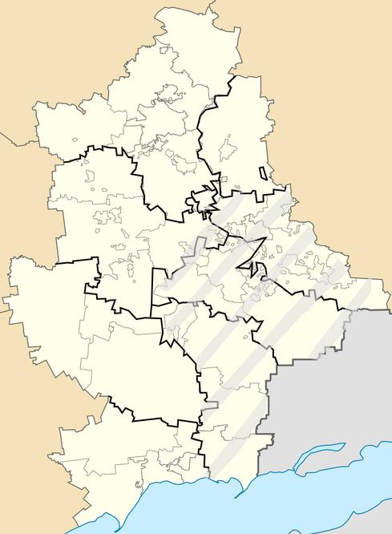

География

Город расположен на востоке Донецкой области, граница с Луганской областью подходит к его северо-восточным окраинам.
Соседние населённые пункты по странам света:
- С: Садово-Хрустальненский и Грабово
- СЗ: Пелагеевка
- СВ: Коренное — в Луганской области
- З: город Торез (примыкает)
- В: Зрубное
- ЮЗ: Мануйловка, Петровское
- ЮВ: Латышево, Дмитровка
Население
Население городского совета на 1 октября 2021 года — 64 069 чел. С 1992 года население города сократилось более, чем на 33 %. Рождаемость — 6,2 на 1000 жителей, смертность — 20,6, естественная убыль — 14,4, сальдо миграции отрицательное (–7,3 на 1000 жителей).
Административное деление
- Андреевский поселковый совет
- пгт Бражино
- Горняцкий поселковый совет
- Залесненский поселковый совет
- пгт Лиманчук
- Мочалино
- пгт Никифорово
- пгт Орехово
- Первомайский поселковый совет
- пгт Первомайское
- пгт Победа
- пгт Северный поселковый совет
- Суховское
Транспорт
- 1 - АС город — шахта Северная
- 2 - АС город — шахта Восход
- 3. АС город — шахта Суховская
- 4А. АС меж. город — ЦОФ Киселева
- 6. АС город — пос. Андреевка
- 7. АС город — пос. Веселое
- 8. АС город — ш. 104 (ш.37)
- 9. АС город — ш. №1
- 11. АС город — пос. Первомайкое
- 14А. АС меж. город — пос. Ремовка
- 15. АС меж. город — ш. № 8-9 КСМ
- 17. АС город — ЖДВ — АС меж. город